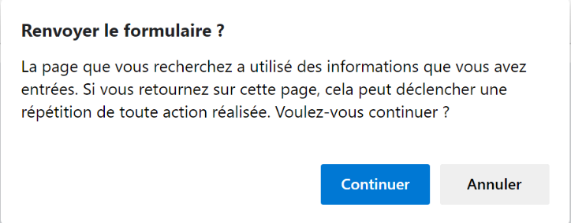
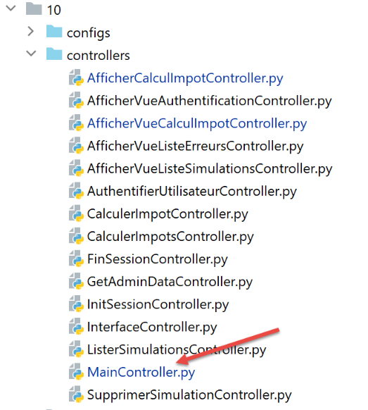

35. تمرين تطبيقي: الإصدار 15
35.1. مقدمة
تهدف هذه النسخة إلى حل المشكلات المتعلقة بتحديث صفحات التطبيق في المتصفح (F5). لنأخذ مثالاً. قام المستخدم للتو بحذف المحاكاة ذات id=3:

بعد الحذف، يصبح URL في المتصفح هو [/supprimer-simulation/3/…]. إذا قام المستخدم بتحديث الصفحة (F5)، فسيتم إعادة تشغيل URL و [1]. وبالتالي، يتم طلب حذف المحاكاة ذات المعرف id=3 مرة أخرى. وتكون النتيجة كما يلي:

إليك مثالًا آخر. قام المستخدم للتو بحساب ضريبة:
- في [1]، يتم استدعاء URL و[/calculer-impot] اللذين تم استدعاؤهما للتو باستخدام POST؛
إذا قام المستخدم بتحديث الصفحة (F5)، فسيظهر له رسالة تحذير:

تؤدي عملية تحديث الصفحة إلى إعادة تشغيل آخر طلب نفذه المتصفح، وهو في هذه الحالة [POST /calculer-impot]. عندما يُطلب إعادة تنفيذ POST، تصدر المتصفحات تحذيرًا مشابهًا للتحذير المذكور أعلاه. ويحذر هذا التحذير من أنه يجري إعادة تنفيذ إجراء تم تنفيذه بالفعل. لنفترض أن هذا POST قد أتم عملية شراء، فسيكون من المؤسف إعادة تنفيذها.
بالإضافة إلى ذلك، سنقوم بتقييد إمكانية قيام المستخدم بكتابة URL في متصفحه. لنأخذ على سبيل المثال إحدى الصفحات السابقة:

الروابط المتوفرة في هذه الصفحة هي:
- [Liste des simulations] المرتبط بـ URL و [/lister-simulations]؛
- [Fin de session] المرتبط بـ URL و [/fin-session]؛
- [Valider] مرتبط بـ URL (غير ظاهر أعلاه) [/calculer-impot]؛
عند عرض شاشة حساب الضريبة، لن نقبل سوى الإجراء [/lister-simulations, /fin-session, /calculer-impot]. إذا قام المستخدم بإدخال إجراء آخر في متصفحه، فسيتم الإبلاغ عن خطأ. وسنجري هذا النوع من التحقق بالنسبة للشاشات الأربع للتطبيق.
نقترح حل مشكلة تحديث الصفحات بالطريقة التالية:
- سنميز بين نوعين من الإجراءات:
- الإجراءات ADS (Action Do Something) التي تغير حالة التطبيق. وعادةً ما تحتوي الإجراءات ADS على معلمات في URL أو في نص الطلب؛
- الإجراءات ASV (إجراء Show View) التي تعرض طريقة عرض دون تغيير حالة التطبيق. سيكون عدد الإجراءات ASV مساوياً لعدد طرق العرض V. لا تحتوي الإجراءات ASV على أي معلمات؛
- كانت الإجراءات ADS تُنفَّذ حتى الآن ثم تنتهي بعرض طريقة عرض V بعد إعداد النموذج M الخاص بها. من الآن فصاعدًا، ستضع النموذج M للطريقة في الجلسة وتطلب من المتصفح إعادة التوجيه إلى الإجراء ASV المسؤول عن عرض الطريقة V؛
- ولن يتم عرض طرق العرض V إلا بعد تنفيذ الإجراء ASV. وستأخذ هذه الطرق نموذجها من الجلسة؛
وتكمن فائدة هذه الطريقة في أن المتصفح سيعرض URL ASV في حقل العنوان الخاص به. وعند تحديث الصفحة، سيتم إعادة تنفيذ الإجراء ASV. ولا يغير هذا الإجراء حالة التطبيق ويستخدم نموذجًا من الجلسة. وبالتالي، سيتم إعادة عرض نفس الصفحة دون أي آثار جانبية. وأخيرًا، وبسبب عمليات إعادة التوجيه، لن يرى المستخدم سوى إجراءات URL و ASV في متصفحه، وسيشعر وكأنه يتنقل من صفحة إلى أخرى؛
35.2. التنفيذ

يتم الحصول على المجلد [impots/http-servers/10] في البداية عن طريق نسخ المجلد [impots/http-servers/09]. ثم يتم تعديله.
35.2.1. المسارات الجديدة

في الملفين [routes_with_csrftoken] و [routes_without_csrftoken]، يتعين علينا إنشاء المسارات الأربعة الخاصة بالإجراءات الأربعة ASV التي تعرض العروض الأربعة. أما المسارات الأخرى فتبقى كما هي.
في [routes_with_csrftoken]:
# عرض-عرض-حساب-الضريبة
@app.route('/afficher-vue-calcul-impot/<string:csrf_token>', methods=['GET'])
def afficher_vue_calcul_impot(csrf_token: str) -> tuple:
# يتم تنفيذ وحدة التحكم المرتبطة بالإجراء
return front_controller()
# عرض-طريقة-عرض-المصادقة
@app.route('/afficher-vue-authentification/<string:csrf_token>', methods=['GET'])
def afficher_vue_authentification(csrf_token: str) -> tuple:
# يتم تنفيذ وحدة التحكم المرتبطة بالإجراء
return front_controller()
# عرض-طريقة-عرض-قائمة-المحاكاة
@app.route('/afficher-vue-liste-simulations/<string:csrf_token>', methods=['GET'])
def afficher_vue_liste_simulations(csrf_token: str) -> tuple:
# يتم تنفيذ وحدة التحكم المرتبطة بالإجراء
return front_controller()
# عرض-طريقة-عرض-قائمة_الأخطاء
@app.route('/afficher-vue-liste-erreurs/<string:csrf_token>', methods=['GET'])
def afficher_vue_liste_erreurs(csrf_token: str) -> tuple:
# يتم تنفيذ وحدة التحكم المرتبطة بالإجراء
return front_controller()
في الأسطر 1-23، أنشأنا أربعة مسارات لأربع إجراءات ASV:
- [/afficher-vue-authentification]، السطر 8، يعرض طريقة عرض المصادقة؛
- [/afficher-vue-calcul-impot]، السطر 2، يعرض شاشة حساب الضريبة؛
- [/afficher-vue-liste-simulations]، السطر 14، يعرض شاشة عمليات المحاكاة؛
- [/afficher-vue-liste-erreurs]، السطر 20، يعرض عرض الأخطاء غير المتوقعة؛
ونفعل الشيء نفسه في الملف [routes_with_csrftoken] الخاص بالطرق التي لا تتطلب رمزًا:
# طرق ASV -------------------------
# عرض-طريقة-عرض-حساب-الضريبة
@app.route('/afficher-vue-calcul-impot', methods=['GET'])
def afficher_vue_calcul_impot() -> tuple:
# يتم تنفيذ وحدة التحكم المرتبطة بالإجراء
return front_controller()
# عرض-طريقة-عرض-المصادقة
@app.route('/afficher-vue-authentification', methods=['GET'])
def afficher_vue_authentification() -> tuple:
# يتم تنفيذ وحدة التحكم المرتبطة بالإجراء
return front_controller()
# عرض-طريقة-عرض-قائمة-المحاكاة
@app.route('/afficher-vue-liste-simulations', methods=['GET'])
def afficher_vue_liste_simulations() -> tuple:
# يتم تنفيذ وحدة التحكم المرتبطة بالإجراء
return front_controller()
# عرض-طريقة-عرض-قائمة_الأخطاء
@app.route('/afficher-vue-liste-erreurs', methods=['GET'])
def afficher_vue_liste_erreurs() -> tuple:
# يتم تنفيذ وحدة التحكم المرتبطة بالإجراء
return front_controller()
35.2.2. أجهزة التحكم الجديدة

تقوم وحدة التحكم [AfficherVueAuthentificationController] بتنفيذ الإجراء ASV [/afficher-vue-authentification]:
from flask_api import status
from werkzeug.local import LocalProxy
from InterfaceController import InterfaceController
class AfficherVueAuthentificationController(InterfaceController):
def execute(self, request: LocalProxy, session: LocalProxy, config: dict) -> (dict, int):
# يتم استرداد عناصر المسار
params = request.path.split('/')
action = params[1]
# تغيير العرض - مجرد تعيين رمز الحالة
return {"action": action, "état": 1100, "réponse": ""}, status.HTTP_200_OK
سبق أن ذكرنا أن الإجراءات ASV لا تحتوي على أي معلمات ولا تغير حالة التطبيق. نكتفي بعرض العرض المطلوب عن طريق تعيين رمز الحالة في السطر 14.
يقوم وحدة التحكم [AfficherVueCalculImpotController] بتنفيذ الإجراء ASV [/afficher-vue-calcul-impot]:
from flask_api import status
from werkzeug.local import LocalProxy
from InterfaceController import InterfaceController
class AfficherVueCalculImpotController(InterfaceController):
def execute(self, request: LocalProxy, session: LocalProxy, config: dict) -> (dict, int):
# يتم استرداد عناصر المسار
params = request.path.split('/')
action = params[1]
# تغيير العرض - ما عليك سوى تعيين رمز الحالة
return {"action": action, "état": 1400, "réponse": ""}, status.HTTP_200_OK
تقوم وحدة التحكم [AfficherVueListeSimulationsController] بتنفيذ الإجراء ASV [/afficher-vue-liste-simulations]:
from flask_api import status
from werkzeug.local import LocalProxy
from InterfaceController import InterfaceController
class AfficherVueListeSimulationsController(InterfaceController):
def execute(self, request: LocalProxy, session: LocalProxy, config: dict) -> (dict, int):
# يتم استرداد عناصر المسار
params = request.path.split('/')
action = params[1]
# تغيير العرض - ما عليك سوى تعيين رمز الحالة
return {"action": action, "état": 1200, "réponse": ""}, status.HTTP_200_OK
يقوم وحدة التحكم [AfficherVueListeErreursController] بتنفيذ الإجراء ASV [/afficher-vue-liste-erreurs]:
from flask_api import status
from werkzeug.local import LocalProxy
from InterfaceController import InterfaceController
class AfficherVueListeErreursController(InterfaceController):
def execute(self, request: LocalProxy, session: LocalProxy, config: dict) -> (dict, int):
# يتم استرداد عناصر المسار
params = request.path.split('/')
action = params[1]
# تغيير العرض - ما عليك سوى تعيين رمز الحالة
return {"action": action, "état": 1300, "réponse": ""}, status.HTTP_200_OK
لنلخص رموز الحالة:
- يجب أن يعرض الرمز 1100 شاشة المصادقة؛
- يجب أن يعرض الرمز 1400 شاشة حساب الضريبة؛
- يجب أن يعرض الرمز 1200 شاشة المحاكاة؛
- يجب أن يعرض الرمز 1300 شاشة الأخطاء غير المتوقعة؛
35.2.3. التكوين الجديد MVC

نظرًا لأن التكوين MVC أصبح كبيرًا جدًّا، فقد تم تقسيمه إلى أربعة ملفات:
- [controllers]: قائمة عناصر التحكم C الخاصة بالتطبيق MVC؛
- [ads_actions]: قائمة الإجراءات ADS (Action Do Something)؛
- [asv_actions]: قائمة الإجراءات في ASV (Action Show View)؛
- [responses]: يسرد فئات الردود HTTP الخاصة بالتطبيق؛
لنبدأ بالأبسط، ملف الإجابات HTTP [responses]:
def configure(config: dict) -> dict:
# تكوين التطبيق MVC
# الردود HTTP
from HtmlResponse import HtmlResponse
from JsonResponse import JsonResponse
from XmlResponse import XmlResponse
# أنواع الردود المختلفة (json، xml، html)
responses = {
"json": JsonResponse(),
"html": HtmlResponse(),
"xml": XmlResponse()
}
# يتم إنشاء قاموس الإجابات HTTP
return {
# الإجابات HTTP
"responses": responses,
}
لا مفاجأة.
كما أن ملف [controllers] الخاص بوحدات التحكم لا يحمل أي مفاجآت. فقد تمت ببساطة إضافة وحدات التحكم الجديدة الخاصة بعمليات ASV إليه.
def configure(config: dict) -> dict:
# تكوين التطبيق MVC
# وحدة التحكم الرئيسية
from MainController import MainController
# وحدات التحكم في الإجراءات ADS
from AuthentifierUtilisateurController import AuthentifierUtilisateurController
from CalculerImpotController import CalculerImpotController
from CalculerImpotsController import CalculerImpotsController
from FinSessionController import FinSessionController
from GetAdminDataController import GetAdminDataController
from InitSessionController import InitSessionController
from ListerSimulationsController import ListerSimulationsController
from SupprimerSimulationController import SupprimerSimulationController
from AfficherCalculImpotController import AfficherCalculImpotController
# وحدات التحكم في الإجراءات ASV
from AfficherVueCalculImpotController import AfficherVueCalculImpotController
from AfficherVueAuthentificationController import AfficherVueAuthentificationController
from AfficherVueListeErreursController import AfficherVueListeErreursController
from AfficherVueListeSimulationsController import AfficherVueListeSimulationsController
# الإجراءات المصرح بها ومراقبوها
controllers = {
# تهيئة جلسة حسابية
"init-session": InitSessionController(),
# مصادقة المستخدم
"authentifier-utilisateur": AuthentifierUtilisateurController(),
# رابط إلى عرض حساب الضريبة
"afficher-calcul-impot": AfficherCalculImpotController(),
# حساب الضريبة في الوضع الفردي
"calculer-impot": CalculerImpotController(),
# حساب الضريبة في الوضع الدفعي
"calculer-impots": CalculerImpotsController(),
# قائمة عمليات المحاكاة
"lister-simulations": ListerSimulationsController(),
# حذف محاكاة
"supprimer-simulation": SupprimerSimulationController(),
# إنهاء جلسة الحساب
"fin-session": FinSessionController(),
# الحصول على البيانات من مصلحة الضرائب
"get-admindata": GetAdminDataController(),
# وحدة التحكم الرئيسية
"main-controller": MainController(),
# عرض شاشة المصادقة
"afficher-vue-authentification": AfficherVueAuthentificationController(),
# عرض شاشة حساب الضريبة
"afficher-vue-calcul-impot": AfficherVueCalculImpotController(),
# عرض شاشة عمليات المحاكاة
"afficher-vue-liste-simulations": AfficherVueListeSimulationsController(),
# عرض شاشة الأخطاء
"afficher-vue-liste-erreurs": AfficherVueListeErreursController()
}
# إجراء تكوين أدوات التحكم
return {
# وحدات التحكم
"controllers": controllers,
}
التكوين [asv_actions] للإجراءات ASV هو كما يلي:
def configure(config: dict) -> dict:
# تكوين التطبيق MVC
# تعتمد طرق العرض HTML ونماذجها على الحالة التي يعرضها وحدة التحكم
# الإجراءات ASV (إجراء عرض الطبقة)
asv = [
{
# عرض المصادقة
"états": [
1100, # /عرض-طريقة-المصادقة
],
"view_name": "views/vue-authentification.html",
},
{
# عرض حساب الضريبة
"états": [
1400, # /عرض-طريقة-حساب-الضريبة
],
"view_name": "views/vue-calcul-impot.html",
},
{
# عرض قائمة عمليات المحاكاة
"états": [
1200, # /عرض-قائمة-المحاكاة
],
"view_name": "views/vue-liste-simulations.html",
},
{
# عرض قائمة الأخطاء
"états": [
1300, # /عرض-قائمة-الأخطاء
],
"view_name": "views/vue-erreurs.html",
},
]
# يتم إجراء التكوين ASV
return {
# طرق العرض والقوالب
"asv": asv,
}
- يضم الملف [asv_actions] الإجراءات الأربع الجديدة التي نذكر طريقة عملها:
- لا تحتوي على أي معلمات؛
- تعرض طريقة عمل عرضًا محددًا يكون نموذجه موجودًا في الجلسة؛
- تربط قائمة [asv] في الأسطر 6-35 عرضًا بكل إجراء من إجراءات ASV؛
يضم الملف [ads_actions] الإجراءات ADS:
def configure(config: dict) -> dict:
# تكوين التطبيق MVC
# قوالب العروض
from ModelForAuthentificationView import ModelForAuthentificationView
from ModelForCalculImpotView import ModelForCalculImpotView
from ModelForErreursView import ModelForErreursView
from ModelForListeSimulationsView import ModelForListeSimulationsView
# الإجراءات ADS (إجراء Do Something)
ads = [
{
"états": [
400, # /إنهاء الجلسة بنجاح
],
# إعادة التوجيه إلى الإجراء ADS
"to": "/init-session/html",
},
{
"états": [
700, # /بدء-الجلسة - نجاح
201, # /توثيق-المستخدم فشل
],
# إعادة التوجيه إلى الإجراء ASV
"to": "/afficher-vue-authentification",
# قالب العرض التالي
"model_for_view": ModelForAuthentificationView()
},
{
"états": [
200, # /توثيق-المستخدم نجح
300, # /حساب-الضريبة نجاح
301, # /حساب-الضريبة فشل
800, # /عرض-حساب-الضريبة رابط
],
# إعادة التوجيه إلى الإجراء ASV
"to": "/afficher-vue-calcul-impot",
# قالب الصفحة التالية
"model_for_view": ModelForCalculImpotView()
},
{
"états": [
500, # /عرض-قائمة-المحاكاة (نجاح)
600, # /حذف-المحاكاة (نجاح)
],
# إعادة التوجيه إلى الإجراء ASV
"to": "/afficher-vue-liste-simulations",
# قالب للصفحة التالية
"model_for_view": ModelForListeSimulationsView()
},
]
# عرض الأخطاء غير المتوقعة
view_erreurs = {
# إعادة التوجيه إلى الإجراء ASV
"to": "/afficher-vue-liste-erreurs",
# نموذج للصفحة التالية
"model_for_view": ModelForErreursView()
}
# يتم إجراء التكوين MVC
return {
# الإجراءات ADS
"ads": ads,
# عرض الأخطاء غير المتوقعة
"view_erreurs": view_erreurs,
}
- الأسطر 11-51: قائمة الإجراءات ADS (إجراء Do Something). نجد جميع الإجراءات الموجودة في الإصدارات السابقة. لكن طريقة عملها قد تغيرت:
- فهي لا تعرض العرض V، بل تقوم فقط بإعداد النموذج M لهذا العرض V؛
- تطلب عرض العرض V عبر إعادة توجيه إلى الإجراء ASV المرتبط بالعرض V؛
- لا تؤدي جميع الإجراءات ADS إلى إعادة توجيه إلى إجراء ASV: في الأسطر 12-18، تؤدي الإجراءات ADS و [/fin-session] إلى إعادة توجيه إلى الإجراءات ADS و [/init-session/html]. ولتمييز عمليات إعادة التوجيه ADS -> ADS و ADS -> ASV، يمكن الاستعانة بالنموذج [model_for_view]. وهذا النموذج غير موجود بالنسبة لعمليات إعادة التوجيه ADS -> ADS؛
يتطور الملف [main/config] الذي يجمع جميع التكوينات على النحو التالي:
def configure(config: dict) -> dict:
# تكوين مسار النظام
import syspath
config['syspath'] = syspath.configure(config)
# إعدادات التطبيق
import parameters
config['parameters'] = parameters.configure(config)
# تكوين قاعدة البيانات
import database
config["database"] = database.configure(config)
# إنشاء مثيلات طبقات التطبيق
import layers
config['layers'] = layers.configure(config)
# تكوين MVC لطبقة [web]
config['mvc'] = {}
# تكوين عناصر التحكم في الطبقة [web]
import controllers
config['mvc'].update(controllers.configure(config))
# الإجراءات ASV (إجراء عرض)
import asv_actions
config['mvc'].update(asv_actions.configure(config))
# الإجراءات ADS (إجراء «Do Something»)
import ads_actions
config['mvc'].update(ads_actions.configure(config))
# تكوين الردود HTTP
import responses
config['mvc'].update(responses.configure(config))
# تقديم التكوين
return config
35.2.4. النماذج الجديدة

ستقوم القوالب بإنشاء معلومات جديدة. لنأخذ على سبيل المثال قالب شاشة المصادقة:
from flask import Request
from werkzeug.local import LocalProxy
from AbstractBaseModelForView import AbstractBaseModelForView
class ModelForAuthentificationView(AbstractBaseModelForView):
def get_model_for_view(self, request: Request, session: LocalProxy, config: dict, résultat: dict) -> dict:
# تغليف بيانات الصفحة في القالب
modèle = {}
…
# رمز CSRF
modèle['csrf_token'] = super().get_csrftoken(config)
# الإجراءات الممكنة من العرض
modèle['actions_possibles'] = ["afficher-vue-authentification", "authentifier-utilisateur"]
# يتم عرض القالب
return modèle
- الجديد هو السطر 17: سيقوم كل نموذج بإنشاء قائمة بالإجراءات الممكنة عند عرض العرض V الذي يمثل النموذج M الخاص به. لمعرفة هذه الإجراءات، يجب العودة إلى العرض V. في حالة عرض المصادقة:

- نلاحظ أن شاشة المصادقة لا تقدم سوى إجراء واحد، وهو الإجراء المرتبط بالزر [Valider]. هذا الإجراء هو [/authentifier-utilisateur]؛
وقد كُتب:
# الإجراءات الممكنة من الصفحة
modèle['actions_possibles'] = ["afficher-vue-authentification", "authentifier-utilisateur"]
في العرض أعلاه، نلاحظ أنه إذا قام المستخدم بتحديث الصفحة، فسيتم إعادة تنفيذ الإجراء [1] [/afficher-vue-authentification]. لذلك يجب أن تكون هذه العملية مسموحة. كان من الممكن عدم السماح بها، وفي هذه الحالة كان المستخدم سيواجه خطأً في كل مرة يعيد فيها تحميل الصفحة. وقد رأينا أن هذا الأمر غير مرغوب فيه.
يتم وضع الإجراءات الممكنة في قالب العرض. ونعلم أن هذا القالب سيتم تخزينه في الجلسة.
ونقوم بذلك لكل من العروض الأربعة. وبذلك تكون الإجراءات الممكنة كما يلي:
عرض المصادقة
modèle['actions_possibles'] = ["afficher-vue-authentification", "authentifier-utilisateur"]
عرض حساب الضريبة
# الإجراءات الممكنة من الصفحة
modèle['actions_possibles'] = ["afficher-vue-calcul-impot", "calculer-impot", "lister-simulations","fin-session"]
عرض قائمة عمليات المحاكاة
# الإجراءات الممكنة من العرض
actions_possibles = ["afficher-vue-liste-simulations", "afficher-calcul-impot", "fin-session"]
if len(modèle['simulations']) != 0:
actions_possibles.append("supprimer-simulation")
modèle['actions_possibles'] = actions_possibles
عرض قائمة الأخطاء
# الإجراءات الممكنة من العرض
modèle['actions_possibles'] = ["afficher-vue-liste-erreurs", "afficher-calcul-impot", "lister-simulations", "fin-session"]
35.2.5. وحدة التحكم الرئيسية الجديدة

يخضع وحدة التحكم [MainController] لبعض التعديلات:
# استيراد التبعيات
import threading
import time
from random import randint
from flask_api import status
from flask_wtf.csrf import generate_csrf, validate_csrf
from werkzeug.local import LocalProxy
from wtforms import ValidationError
from InterfaceController import InterfaceController
from Logger import Logger
from SendAdminMail import SendAdminMail
def send_adminmail(config: dict, message: str):
# إرسال بريد إلكتروني إلى مسؤول التطبيق
config_mail = config['parameters']['adminMail']
config_mail["logger"] = config['logger']
SendAdminMail.send(config_mail, message)
# وحدة التحكم الرئيسية للتطبيق
class MainController(InterfaceController):
def execute(self, request: LocalProxy, session: LocalProxy, config: dict) -> (dict, int):
# تتم معالجة الطلب
type_response1 = None
logger = None
try:
# يتم استرداد عناصر المسار
params = request.path.split('/')
# الإجراء هو العنصر الأول
action = params[1]
# تسجيل
logger = Logger(config['parameters']['logsFilename'])
…
# الإجراء /عرض-قائمة-الأخطاء هو إجراء خاص
# لا يتم إجراء أي تحقق، وإلا فإننا نخاطر بالدخول في حلقة إعادة توجيه لا نهائية
erreur = False
if action != "afficher-vue-liste-erreurs":
# في حالة وجود خطأ، فإن [النتيجة] هي النتيجة التي يجب إرسالها إلى العميل
(erreur, résultat, type_response1) = MainController.check_action(params, session, config)
# إذا لم تكن هناك أخطاء - يتم تنفيذ الإجراء
if not erreur:
# يتم تنفيذ وحدة التحكم المرتبطة بالإجراء
controller = config['mvc']['controllers'][action]
résultat, status_code = controller.execute(request, session, config)
except BaseException as exception:
# استثناءات (غير متوقعة)
résultat = {"action": action, "état": 131, "réponse": [f"{exception}"]}
erreur = True
finally:
pass
# خطأ في التنفيذ
if erreur:
# طلب خاطئ
status_code = status.HTTP_400_BAD_REQUEST
if config['parameters']['with_csrftoken']:
# يتم إضافة csrf_token إلى النتيجة
résultat['csrf_token'] = generate_csrf()
….
# يتم إرسال الرد HTTP
return response, status_code
@staticmethod
def check_action(params: list, session: LocalProxy, config: dict) -> (bool, dict, str):
…
# نتيجة الطريقة
return erreur, résultat, type_response1
- الأسطر 39-44: تُجرى عمليات التحقق الأولى على الإجراء. سنعود إلى هذا لاحقًا. تُرجع الطريقة الثابتة [MainController.check_action] مجموعة مكونة من ثلاثة عناصر:
- [erreur]: True إذا تم الكشف عن خطأ، False بخلاف ذلك؛
- [résultat]: نتيجة الخطأ إذا (erreur==True)، None في حالة عدم وجود خطأ؛
- [type_response1]: نوع الجلسة (json، xml، html، None)، وهو النوع الذي تم العثور عليه في الجلسة؛
- السطر 39: لا يتم إجراء أي تحقق إذا كانت الإجراء هو الإجراء ASV [afficher-vue-liste-erreurs] الذي سيعرض قائمة الأخطاء. ففي الواقع، إذا تم العثور على خطأ أثناء تنفيذ هذا الإجراء، فسيتم إعادة توجيهنا مرة أخرى إلى الإجراء [/afficher-vue-liste-erreurs] وسندخل في حلقة إعادة توجيه لا نهائية؛
- الطريقة الثابتة [check_action] هي كما يلي:
@staticmethod
def check_action(params: list, session: LocalProxy, config: dict) -> (bool, dict, str):
# يتم استرداد الإجراء الجاري
action = params[1]
# لا توجد أخطاء ولا نتائج في البداية
erreur = False
résultat = None
# يجب معرفة نوع الجلسة قبل تنفيذ بعض الإجراءات ADS
type_response1 = session.get('typeResponse')
if type_response1 is None and action != "init-session":
# يتم تسجيل الخطأ
résultat = {"action": action, "état": 101,
"réponse": ["pas de session en cours. Commencer par action [init-session]"]}
erreur = True
# بالنسبة لبعض الإجراءات ADS يجب أن تكون مصادقًا
user = session.get('user')
if user is None and action not in ["init-session",
"authentifier-utilisateur",
"afficher-vue-authentification"]:
# يُلاحظ وجود خطأ
résultat = {"action": action, "état": 101,
"réponse": [f"action [{action}] demandée par utilisateur non authentifié"]}
erreur = True
# من خلال إحدى طرق العرض، لا يمكن تنفيذ سوى بعض الإجراءات
if not erreur and action != "init-session":
# لا توجد إجراءات ممكنة في الوقت الحالي
actions_possibles = None
# يتم استرداد نموذج العرض المستقبلي في الجلسة إن وجد
modèle = session.get('modèle')
# إذا تم العثور على نموذج، يتم استرداد الإجراءات الممكنة الخاصة به
if modèle:
actions_possibles = modèle.get('actions_possibles')
# إذا كانت لدينا قائمة بالإجراءات الممكنة، نتحقق من أن الإجراء الحالي مدرج فيها
if actions_possibles and action not in actions_possibles:
# يتم تسجيل الخطأ
résultat = {"action": action, "état": 151,
"réponse": [f"action [{action}] incorrecte dans l'environnement actuel"]}
erreur = True
# خطأ؟
if not erreur and config['parameters']['with_csrftoken']:
# نتحقق من صحة رمز csrf
# csrf_token هو العنصر الأخير في المسار
csrf_token = params.pop()
try:
# سيتم إلقاء استثناء إذا كان csrf_token غير صالح
validate_csrf(csrf_token)
except ValidationError as exception:
# رمز CSRF غير صالح
résultat = {"action": action, "état": 121, "réponse": [f"{exception}"]}
# تم تسجيل الخطأ
erreur = True
# نتيجة الطريقة
return erreur, résultat, type_response1
- السطر 2: تقوم الطريقة [check_action] بإجراء عدة عمليات تحقق من صحة الإجراء الجاري؛
- الأسطر 6-26، 45-57: كانت الإصدارات السابقة تجري هذه الفحوصات بالفعل؛
- الأسطر 28-42: تمت إضافة فحص جديد. يتم التحقق مما إذا كانت العملية الجارية ممكنة في الحالة الحالية للتطبيق. إذا كانت العملية الجارية غير ممكنة، يتم إنشاء حالة 151 (السطر 40) التي تضمن لنا أن العملية الحالية سيتم إعادة توجيهها إلى عرض الأخطاء غير المتوقعة؛
35.2.6. الاستجابة الجديدة HTML

التعديلات الجارية لا تتعلق إلا بجلسات HTML. ولا تتأثر جلسات jSON أو XML. وتتطور الفئة [HtmlResponse] على النحو التالي:
# التبعيات
from flask import make_response, redirect, render_template
from flask.wrappers import Response
from flask_api import status
from flask_wtf.csrf import generate_csrf
from werkzeug.local import LocalProxy
from InterfaceResponse import InterfaceResponse
class HtmlResponse(InterfaceResponse):
def build_http_response(self, request: LocalProxy, session: LocalProxy, config: dict, status_code: int,
résultat: dict) -> (Response, int):
# الاستجابة HTML تعتمد على رمز الحالة الذي أرجعته وحدة التحكم
état = résultat["état"]
# نبحث عما إذا كانت الحالة ناتجة عن إجراء ما ASV
# وفي هذه الحالة، يجب عرض طريقة عرض
asv_configs = config['mvc']["asv"]
trouvé = False
i = 0
# يتم تصفح قائمة العروض
nb_views = len(asv_configs)
while not trouvé and i < nb_views:
# العرض رقم i
asv_config = asv_configs[i]
# التقارير المرتبطة بالعرض رقم i
états = asv_config["états"]
# هل توجد الحالة المطلوبة ضمن الحالات المرتبطة بالعرض رقم i
if état in états:
trouvé = True
else:
# العرض التالي
i += 1
# هل تم العثور عليه؟
if trouvé:
# إنها عملية ASV - يجب عرض عرض يكون نموذجه موجودًا بالفعل في الجلسة
# يتم إنشاء رمز الاستجابة HTML
html = render_template(asv_config["view_name"], modèle=session['modèle'])
# يتم إنشاء الرد HTTP
response = make_response(html)
response.headers['Content-Type'] = 'text/html; charset=utf-8'
# يتم عرض النتيجة
return response, status_code
# غير موجود - إنه رمز حالة لإجراء ما ADS
# وسيتبع ذلك إعادة توجيه
redirected = False
for ads in config['mvc']['ads']:
# حالات تتطلب إعادة توجيه
états = ads["états"]
if état in états:
# توجد عملية إعادة توجيه
redirected = True
break
# قاموس إعادة التوجيه لحالات الأخطاء غير المتوقعة
if not redirected:
ads = config['mvc']['view_erreurs']
# هل هذه إعادة توجيه إلى إجراء ASD أم ASV؟
# إذا كان هناك قالب، فهذا يعني أنه إعادة توجيه إلى إجراء ASV
# في هذه الحالة، يجب حساب قالب العرض V الذي سيتم عرضه بواسطة الإجراء ASV
model_for_view = ads.get("model_for_view")
if model_for_view:
# حساب نموذج العرض التالي
modèle = model_for_view.get_model_for_view(request, session, config, résultat)
# يتم تخزين النموذج في الجلسة للعرض التالي
session['modèle'] = modèle
# الآن يجب إنشاء URL لإعادة التوجيه دون نسيان الرمز المميز CSRF إذا طُلب
if config['parameters']['with_csrftoken']:
csrf_token = f"/{generate_csrf()}"
else:
csrf_token = ""
# استجابة إعادة التوجيه
return redirect(f"{ads['to']}{csrf_token}"), status.HTTP_302_FOUND
- الأسطر 18-35: يتم البحث عما إذا كانت الحالة الناتجة عن آخر إجراء تم تنفيذه هي حالة إجراء ASV؛
- الأسطر 36-46: إذا كان الجواب نعم، يتم عرض العرض V المرتبط بالإجراء ASV باستخدام النموذج الموجود في الجلسة والمرتبط بالمفتاح [‘modèle’]؛
- الأسطر 48-60: عند الوصول إلى هذه المرحلة، نعلم أن الحالة الناتجة عن آخر إجراء تم تنفيذه هي حالة الإجراء ADS. سيؤدي ذلك إلى إعادة توجيه. نبحث في ملف التكوين عن تعريف إعادة التوجيه هذه؛
- السطر 62: عند الوصول إلى هنا، يتوفر لدينا تكوين عملية إعادة التوجيه المطلوب إجراؤها. وهناك حالتان:
- إما أن تكون إعادة التوجيه إلى إجراء آخر ADS. وفي هذه الحالة، لا يوجد نموذج عرض يجب حسابه؛
- تتم إعادة التوجيه إلى إجراء ASV. في هذه الحالة، يوجد نموذج عرض يجب حسابه (السطور 67-68). ثم يتم تخزين هذا النموذج في الجلسة (السطر 70)؛
- الأسطر 72-76: يتم حساب URL الخاص بإعادة التوجيه؛
- السطور 78-79: يتم إرسال استجابة إعادة التوجيه إلى العميل؛
35.3. الاختبارات
قم بإجراء الاختبارات التالية باستخدام متصفح:
- استخدم التطبيق بشكل عادي. تحقق من أن رموز URL التي يعرضها المتصفح هي فقط URL و ASV و [/afficher-vue-nom_de_la_vue]؛
- قم بتحديث الصفحات (F5) وتأكد من أن نفس الصفحة تُعرض مرة أخرى. لا توجد أي آثار جانبية؛
من ناحية أخرى، استخدم العميل [impots/http-clients/09]. نظرًا لأن التعديلات التي تم إجراؤها تتعلق فقط بجلسات HTML، يجب أن يستمر العملاء [main, main2, main3, Test1HttpClientDaoWithSession, Test2HttpClientDaoWithSession] في العمل.
الآن لنرى حالة لا يمكن فيها تنفيذ الإجراء. يتم عرض الشاشة التالية:

بدلاً من [1]، نكتب URL [/supprimer-simulation/1]. الإجراء [/supprimer-simulation] ليس ضمن الإجراءات المقترحة في العرض، وهي الإجراءات من 1 إلى 4. ولذلك سيتم رفضه. رد الخادم هو كما يلي: